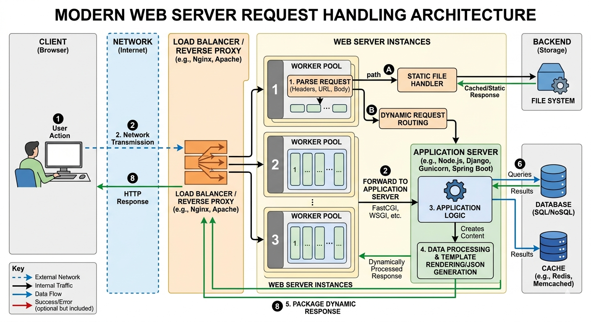
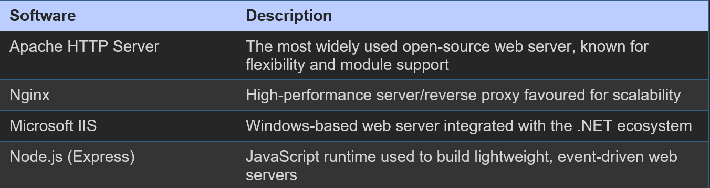

A web server is a program (and the computer hosting it) that stores, processes, and delivers web content to clients over the Internet using the HTTP or HTTPS protocol. When a browser sends a request for a web page, the web server finds the requested resource and sends it back.
Types of Content Served
- Static content: Pre-existing HTML, CSS, images, and JavaScript files served directly from disk
- Dynamic content: Pages generated on-the-fly by server-side scripts (PHP, Python, Node.js) based on user requests, database queries, or business logic
Web Server Request Handling Diagram

Popular Web Server Software
